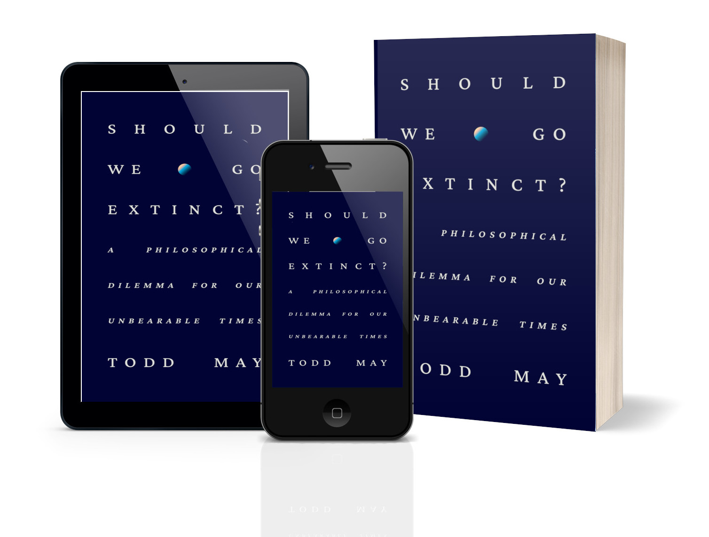

Better for Us if You Leave Now
Human extinction, misanthropy, and a world without us

Humans are the only species that can both cause and contemplate their own extinction. Our enormous technological and philosophical abilities put us in a unique existential situation – one that informs discussions about whether we are wise enough to keep ourselves in existence. Many of the arrangements of human life are, as everyone knows, self-destructive – and, even if we were better at managing our collective existence, there’s always the risk of natural catastrophes – extinction-level events, pandemics, and so on. There is lots of interesting work on the history and philosophy of human extinction – including a splendid book by Emile P. Torres.

The latest contribution to this debate is Todd May’s thoughtful book Should We Go Extinct? He is author of a trilogy on what it means to live significant, decent, and fragile lives. In his latest book, the stakes are higher. Should humankind go extinct? What kinds of value does humankind add to the world? How can our continuation be squared against the enormous suffering and destruction that we bring in our wake? That brutal history is brilliantly illustrated in Steve Cutts' short animation, ‘Man’, at the end of which you may well conclude that it’s better for us to exit the stage. A world without us, as many animal ethicists argue, is a better world for the billions and billions of creatures we hunt, kill, mutilate, and displace.
Should We Go Extinct? asks us hard questions in its hundred and forty-odd pages. While the topic is dark, the prose is as lively as its author, whose online videos testify to May’s buoyant intellectual and personal character. The book avoids the sort of exultant doom-mongering and copy-and-paste antihumanism that characterises a lot of discussion of the value and continuation of humankind. It’s an engaging read, too, often funny without trivialising the issues.
The title poses ‘a disturbing question’. Should humans go extinct given the destruction and suffering we mete out to animals and to the natural world? Asking disturbing questions doesn’t necessitate disturbing answers, of course. Some philosophers, for sure, demand our extinction, as do many radical environmentalists. May also asks, at the start of his book, what a world congress of animals might say, if asked to judge humankind. In all likelihood, ‘we would not fare so well’ and a bestial judiciary may well ‘condemn us to the extinction we are visiting upon so many of them’. Toby Svoboda, in his book on misanthropy, uses a related thought experiment involving a visiting group of extraterrestrial scientists. Maybe the Sixth Extinction – a contested concept, by the way – can be prevented by our extinction.
May focuses on scenarios involving our self-destruction. Comets, pandemics and super-volcanos might finish us off, no doubt, but the focus is on self-imposed sources of human extinction. Can humanity go extinct without harming animals and nature? Nuclear warfare is ruled out – too much collateral damage. A pandemic fatal only to humans may work, or the climate crisis, perhaps. The trick is for us to exit the stage without destroying the stage. May notes a Children of Men scenario – named for P.D. James’s 1992 novel, later adapted for film by Alfonso Cuarón – where humanity inexplicably loses the ability to reproduce, condemning it to a slow decline. In that scenario, humanity’s dying days are ones of misery and despair – the film’s tagline is ‘No children. No future. No hope’.
Sober critics, alarmed by talk of our collective demise, may point to a radical reduction of the human population as an alternative. If there being fewer of us would solve the problem, there’s no reasons to want there to be none of us. May is quite sympathetic to this later in the book, the political and moral problems notwithstanding. Anyway, a reduced population might be followed by a rebound, restarting the cycle. A related problem is the issue of responsibility for our moral failings. Industrialised abuse of animals and nature ruination are most pronounced in resource- and carbon-intensive Global North societies. May notes that Global South societies tend to adopt our bad habits, too – the US and other societies represent ‘the terminus toward which other countries are moving’. Anyway, it’s not as if abuse of animals and nature are found only in modern industrialised countries – Zhuāngzǐ criticised these tendencies two millennia ago.
I’d like to hear more on May’s suggestion that human extinction could be ‘a proper retribution’. Would it be our punishment for our ‘crimes of stupefying proportions’ against animals, as J.M Coetzee called them? I wonder what May would make of a different thought: should we stick around to repair at least some of the damage done to the world? Granted, our enthusiasm for causing damage exceeds our appetite for repairing it. Still, our extinction would end our both human goodness and human evil.
What we bring to the world
In chapter two of Should We Go Extinct?, May asks ‘what’s so good about humanity?’ His foil is David Benatar’s anti-natalist conviction, first voiced by Sophocles, that, given the miserable quality of human life and the suffering we inflict on others, it is ‘better never to have been’. May responds that life is just better than Benatar thinks, even if there are still too many human beings whose lives are really awful – the millions of enslaved, victims of war, those denied safety and security and so on. That said, humans add many positive things to the world, reflecting the Platonic triad of values – experiences of happiness, truth, and reflection on the good life. Do these provide a good argument for our continuation?
Drawing on work by Sarah Buss and Samuel Scheffler, May gives a spirited defence of the value of humankind. ‘If we are the only beings that can appreciate art and science and find a way to recognize truth’, then, argues May, ‘it would be a real loss if we went extinct’. Beautiful experiences, deep truths, and moral achievement will disappear from the world if humans are not around to have and discover them. The world would be ‘impoverished in an important way if there were no longer beings’ capable of experiencing beauty, truth, and a good life.

John Shand: Human Extinction
Would it matter if the entire human race became extinct?
I’m sympathetic to something like this claim. Doubtless there is, for most of us, a strong sense that, without us, this world would be, to some degree, impoverished. Granted, this sense may reflect tacit convictions, hard to articulate, but revealed by the feeling of surety we might get when reading passages such as this:
Wouldn’t the world be impoverished without the experiences of creating and appreciating beauty, truth and the possibilities of a good life? It seems to me, and I don’t think I’m alone in this, that if these experiences come to an end, it would be a tragedy. The world would become a bit hollowed out. It would lose some of its richness.
May acknowledges there’s no definitive way to secure these claims. Appeals might take the place of argumentation. Good philosophical practice can invite us to see the world in instructive new ways. This vision must, however, be related to a different vision – a darker and more dispiriting one of our moral failures.
The problem is that the haziness of claims about the value of our positive experiences contrasts starkly with a horrible definiteness about the suffering and violence of humankind. May, to his credit, is clearsighted about the darker sides of our species – and, I suggest, receptive to a more misanthropic perspective.
A misanthropic perspective
Appreciation of beauty, truth, and goodness are admirable parts of the repertoire of human beings. But creation of ugliness, falsehood, and evil are, too. Chapter 3 opens with graphic descriptions of what one finds in factory farming of chickens and pigs. The purpose of an exposure of our abuses of these animals, says May, is to help us ‘tally the value of additional human happiness’, assuming we continue, by taking care to ‘subtract the negative value that human beings create through the suffering we inflict on other sentient beings’. ‘Negative value’ may strike some readers as too anodyne a term for practices, such as debeaking and unanaesthetised castration, now integral to contemporary forms of animal agriculture. I’m also sceptical about the hope that factory farmed animals ‘must have some happiness’ in their lives. It’s hard to imagine what happiness pigs, cattle, and chickens could feel, amid their crushing, mutilation, anxiety, and slaughter.

Instead of pretending that animal rearing is a just endeavour, may we face the real nature of this practice.
In this chapter, May explores a key argument against the continuation of humanity, or at least the specific configurations of human life we inherited. As animal activists and environmentalists appreciate, the ‘charge lists’ intended to encourage moral critique of our agricultural, industrial, and economic systems and habits reflects very badly on humanity. May does not use the term, but the spirit of this chapter is really one of misanthropy – not in the vernacular sense of a hatred, disgust, or contempt for individual human beings, though. In its philosophical sense, misanthropy is a critical verdict on the collective moral condition and performance of humankind.
A philosophical misanthrope sees the practices, structures, and systems of values and ambitions integral to human life as saturated with a range of failings. Cruelty, arrogance, dogmatism, greed, envy, exploitativeness, wastefulness, insensitivity to suffering… these are just some of the moral and epistemic failings inseparable from what we have come to be. This sort of misanthropic verdict might express itself, of course, in feelings or moods that include anger, frustration, disappointment, and sadness. Moreover, a misanthropic verdict will shape our ways of seeing and understanding the world, shaping our behaviour. The condemnation of humankind sketched by May could be seen as a distillation of the more comprehensive case developed by David E. Cooper in his book Animals and Misanthropy.
Two themes in that book strengthen May’s discussion. First, the moral appraisal of humanity needn’t involve the creation of ‘scales’ or ‘comparisons’ of ‘human happiness and unhappiness versus animal happiness and unhappiness’. Cooper’s strategy is to describe a range of clusters of failings – ‘greed’, ‘hatred’, ‘mindlessness’, etc. – and document their entrenchment in our practices, habits, cultures, and ways of arranging human life. To condemn cruelty to animals, I need not engage in comparison or scaling exercises. It is enough for us to see that infliction of needless suffering is wrong.
Second, May emphasises the ‘richness of human lives’ and our distinctive cognitive and other capacities. But, for a misanthrope, this reinforces a critical verdict. It’s integral to misanthropy that we are aware of the moral wrong of what we do. Granted, bad faith and wilful ignorance – of the reality of animal suffering, say – are among the failings noted by Cooper. Bad faith is possible only for creatures capable of self-reflection, moral understanding and guilt. Moreover, our sophisticated epistemic capacities are needed for those violent enterprises that destroy animals and nature. Reason, collaboration, camaraderie and other capacities are needed for our most inhuman and evil practices, a point discussed by David Livingstone-Smith in On Inhumanity.
Along the way, May also notes a further route into misanthropy, namely, our appalling treatment of one another. For instance, those more economically privileged consistently ignore the suffering that their prosperity imposes on others. Our comfort and conveniences, as all of us know, depend on the immiseration of tens of millions of people. For May, there is ‘something inherently unseemly about us’, and no clear sign of any imminent improvement. ‘Given general human attitudes towards nature’, judges May, ‘I’m not sure that we could be counted on to do much in the way of good and bad’. Selfishness, dogmatism, enmity, willingness to exploit the weak and other failings are not aberrations: not occasional, awful, unwelcome appearances in an otherwise peaceful human world. As the Buddha, two millennia ago, argued, these ‘defilements’ are integral to human life – a world then, as now, ‘burning’ with the ‘fires’ of hatred, greed, and delusion. Indeed, May resists the optimism pedalled by various moral celebrants of humanity, such as Steven Pinker and Rutger Bregman, noting that the ‘suffering we cause to non-human animals has increased’ over time not decreased. Granted, there are local successes, but set against an increasingly violent backdrop.
Doing better
Given the scale, frequency, severity, intensity, and systematicity of our mistreatment of animals and the natural world, the ‘tragedy’ of our disappearance seems questionable. Granted, many of us care, protect and love various animals and natural places, and these are ‘important relations with the world’. Still, abuse and exploitation are other ways of relating to the world, and ones for which we show an inordinate enthusiasm. Later, toward the end of this chapter, May offers that love for animals and nature may be a redeeming feature. It may, however, be an act of love for us to exit the stage. Even when we love someone, it might be better, for them, for us to remove ourselves from their life. A love of animals need not, of course, modulate into hatred of humankind. Then again, hatred is not constitutive of misanthropy. Sadness, grief and resignation are often cited among the misanthropic moods, and recently two environmental ethicists described a kind of ‘misanthropic melancholia’ – related, perhaps, to ‘ecological grief’.
A misanthropic vision of humankind, tinged with sadness, grief, melancholia makes it difficult to want to argue for the continuation of humankind. Granted, some misanthropes do insist that voluntary extinction is the practical conclusion of their dark vision of us. As a Reddit post concisely put it, ‘Extinction-level events – bring it on!’ A less brutal option, defended by Benatar, is the anti-natalist program of gradually bringing the human population down to zero through the voluntary cessation of procreation. Cooper rejects these as nihilistic, overly radical, and unrealistic. A misanthrope may, in dark moods, hope for our collective demise, but engineered extinction and mass procreative abstinence are unlikely to find widespread support. There are anyway other ways of being a misanthrope. What Kant labelled ‘the Enemy of Mankind’ is the violent type, who calls humans ‘a cancer’ and speaks of ‘unmaking civilization’. The ‘Fugitive from Mankind’, another Kantian label, aspires to a personal permanent withdrawal from mainstream forms of human life. Few are capable of such a life, and anyway nothing May says endorses Fugitivism.
There is also the Activist type of misanthrope, those who work for lasting and substantive improvement in our collective moral condition. Toward the end of his book, May makes proposals of this sort (ending of factory farming, significant reduction of the human population, and so on). Given his comments on failures of climate action, I doubt May is hopeful about the prospects for these radical changes. We’re bad at choosing what is just and right over what is convenient and easy.
Your ad-blocker ate the form? Just click here to subscribe!
There is a one more option, too – the Quietist misanthrope – who aims to accommodate to the imperfect moral realities of the world; to live in the world without too much entanglement in its corrupt realities. However, that falls short of what May argues is needed. Going vegan, reducing one’s carbon footprint and doing what good one can do is, doubtless, admirable. Still, misanthropic emotions recur – gnawing feelings of moral anxiety, guilt, and repugnance at knowing the costs of the forms of life in which we are submerged.
May voices different misanthropic sentiments. There is Activism, a desire to encourage substantive changes in our form of life. May’s final chapter urges us to ‘mobilize ourselves to make the world better’ and speaks of ‘moulding our future existence in order to make it more – or at least more nearly – justifiable’. But an element of Quietism is there, too. Calls for extinction add a very radical form of Activism – for, while all Activists aim for a substantive change in human life, the extinctionists add a radical twist. The aim of change is not our betterment but our disappearance. So, three incompatible types of misanthropy are in play.
I call this a misanthropic predicament. It is the painful experience of a misanthrope caught between rival stances, but unable to select one. The painfulness arises because these misanthropic stances are ways of living – an ambitious Activist life is distinct from a modest, quiescent Quietist life. Living means making commitments, taking choices and choosing one set of ambitions over others. If we cannot, then we suffer. A misanthrope, as much as anyone, needs an answer to the question ‘How should I live?’ For May, this question is nested in a wider one: should we – humanity – continue to live, to exist?
Ambivalence
May concludes his book with ambivalence. Should we go extinct? The answer is neither obviously ‘No’, nor unproblematically ‘Yes’, an awkward situation that is, itself, ‘disturbing’. The moral imperatives to improve our treatment of animals and nature require, in turn, the further commitments to address inequality, discrimination, greedy overconsumption and other problems. May does not explicitly voice pessimism, though it lurks in the background. After all, it’s not as if, for centuries, we’ve been diligently working for a world of care and justice but kept getting it wrong somehow.
May puts his titular question in the form of a challenge, or maybe a moral warning:
If we, as a species, cannot find a way to live in a more morally sensitive way in the world, the world might be better off without us. What’s at stake is not the justification to one another of our practices, but the justification of our continuing to be here in the first place.
Should we go extinct? Well, perhaps the answer is a conditional. If we continue with our violent, wasteful, cruel, greedy forms of life to the detriment of animals and the natural world, then, yes. If, though, we somehow manage to reconfigure our world into a more fair and more sustainable form, then, no. A pessimistic misanthrope inclines to the latter – our failings are too entrenched, too ubiquitous. These are assessments of what we have come to be. Is this what we will be doomed to remain?
Should We Go Extinct is an excellent exercise in philosophy. May’s thoughtful and engaging reflections on our value and our future will unsettle readers. It brings into relief the misanthropic perspective: is our collective moral performance so dreadful that extinction is an intelligible hope? If so, what are the prospects for our doing better? Our failings are certain. Our potential for betterment is not.

Ian James Kidd on Daily Philosophy: